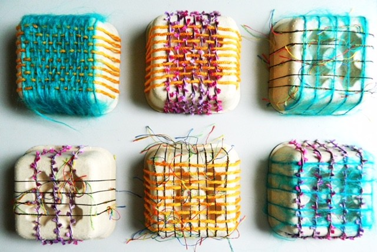
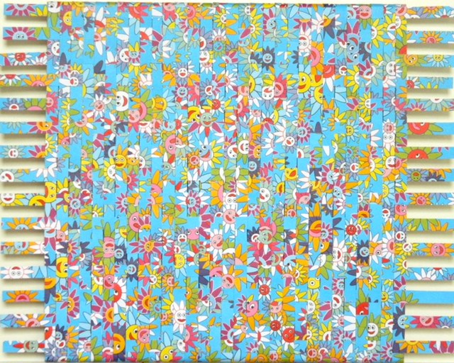

Annette
Räss-Küchlin
Arbeiten
Aus der Serie „use whatever you find“
Statement
Ihre Bilder entstammen einem starken emotionalen Kern. Das Erschreckende und Traurige ebenso wie das Schöne und Hoffnungsvolle.
Ohne jedes Bedenken geht Annette Räss-Küchlin intuitiv vor und zeigt, was sie bewegt und ihr Leben geprägt hat. Fragestellungen nach einer nachhaltigen Lebensweise beschäftigen dabei die Künstlerin, diese veranlassen sie, gebrauchte und nutzlose Materialien zu verweben.
Durch die Reflexion einer herkömmlichen Leinwand als Gewebe geht sie hinter die Malerei zurück und stellt dabei etwas Handfestes an die Seite des Immateriellen aller Wahrnehmung. Annette Räss-Küchlin hinterfragt mit diesem Vorgehen die Leinwand als Gewebe, untersucht deren Funktion als Malgrund und bricht die Grenzen eines Bildes und seines Trägermaterials auf. Das Weben führt dabei nicht nur zur Stabilität, sondern auch zu einer regelmäßigen Struktur, deren Gebundenheit mehrheitlich das Quadrat ist.
Ihre Werkgruppe „use whatever you find“ steht für ihre Arbeitsweise, die das Potential im Einfachen und Unentdeckten sieht und dies ins Licht rückt. Der Prozess der Materialfindung und die mechanische Fertigstellung gehen im vibrierenden Gleichschritt. So enthalten ihre Arbeiten Bordüren, Industriebänder, Papier, Fehldrucke, ja sogar Waschmittelkartons. Auf diese Weise begründet sie den zeitgenössischen Anspruch der Fortführung des Webens als künstlerisch gestalterische Technik.

Vita
Werdegang
- 2001-04
- Kunstkolleg an der freien Hochschule für Grafik-Design & Bildende Kunst, freie Malerei in Freiburg
- 2006-23
- Atelier im Kunsthaus L6
- seit 2009
- Mitglied in der GEDOK Freiburg
Einzelausstellungen
- 2024
- Galerie Strich und Faden, Freiburg
- 2019
- Quartiertreff 46, Freiburg-Zähringen
- 2017
- Evangelisches Stift Freiburg
- 2017
- Restaurant Papiermuseum Basel
- 2015
- Stimmpunkt Freiburg
Gruppenausstellungen
- 2026
- Regionale Donaueschingen
- 2026
- Galerie K5, Freiburg, „geschnitten und gewoben“
- 2025
- Galerie K5, Freiburg, „klein und fein“
- 2021
- Kunstforum Kork
- 2018
- Mitgliederausstellung des BBK, Künstlerwerkstatt L6
- 2016
- Modehaus Kaiser Freiburg, „fashion meets art“
- 2013
- Symposium Arbeitskreis Kunst und Kultur, Ehrenkirchen
- 2013
- Kunsthaus L6, Freiburg
- 2012
- Stadtmuseum Hüfingen
- 2011, 2012
- GEDOK Freiburg, Amtsgericht
- 2010
- Galerie Birkhofer, Gottenheim
- 2010
- GEDOK Freiburg, Schwarzes Kloster
- 2006, 2009
- Kunsthaus L6, Freiburg
Kontakt
Anfragen zu Arbeiten und Ausstellungen
